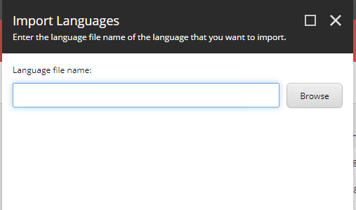
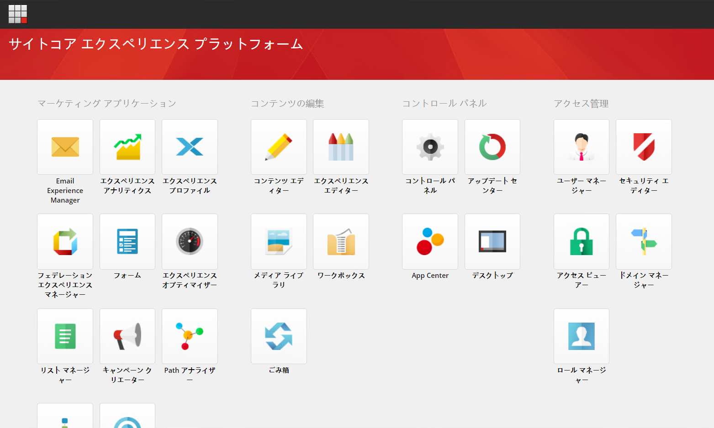

2.4. 日本語リソースのインポート¶
ここでは Sitecore に日本語リソースをインポートする方法を紹介しています。
2.4.1. 日本語リソースファイルの準備¶
日本語リソースに関しては、Sitecore のダウンロードサイトからリソースファイルのダウンロードが可能です。
ページの下のほうにある、Client translations の一覧にある Japanese (ja-JP) のファイルをダウンロードしてください。
また一部の日本語リソースを修正するためのファイルを、GitHub の SitecoreaJapan/InstallScript のリポジトリに公開しています。以下のファイルをダウンロードしてください。
ja-jp-update.xml
2.4.2. 日本語リソースの追加¶
インストールをした Sitecore の環境に管理者としてログインをしてください。

Desktop を起動します
右下に表示されている master をクリックして core に切り替えます
左上にある Sitecore メニューをクリックしてスタート画面に戻ります。
Controle Panel を開きます
Localization にある Add a new language をクリックします

一覧から Japanese (Japan) : 日本語(日本) を選択します。

codepage、Encoding および iso-2022-jp に関しては標準の設定のままで次のダイアログに移動します。
Spellchecker file name は空欄のまま次に進みます
追加が完了します
これで UI のリソースを追加する言語を追加することができました。続いて、コンテンツを追加できるように、データベースを戻します。
スタート画面で Desktop を選択
右下のデータベースを core から master に戻します。
Controle Panel を開いて、もう一度 Localization にある Add a new language から日本語を追加します（手順は上記と同じです）。
これでデータベースとして日本語のデータを扱うことができるようになりました。
2.4.3. 日本語リソースのインポート¶
Controle Panel を開いて、今度は Localization にある Import Language を開きます。
{kind=link}
ファイルの選択画面が表示されます。Browse をクリックします。
{kind=link}
Web サーバのディレクトリが表示されます。この画面からアップロードをすることができますが、今回は手間を省くために以下のような作業を実施します。
インストール先の C:\inetpub\wwwroot\93sc.dev.local\temp のフォルダを開きます
ここにダウンロード済のファイルを展開します（ Sitecore 9.3.0 rev. 003498 (ja-JP).zip のファイルの中にある ja-jp.xml を temp にコピー）
ディレクトリに2つのファイルが入っているのを確認します

Sitecore の管理画面に戻ります
temp フォルダの中に2つファイルがあることを確認します

ja-jp.xml のファイルを選択します

Next をクリックして言語を確認します。ここでは Japanese(Japan):日本語(日本) のみが選択肢として表示されます。
{kind=link}
データベースとして core を選択（デフォルト）のまま進めてインポートを開始します。
{kind=link}
上記の手続きを、ja-jp-update.xml に対しても同じ手続きでインポートをします。
2.4.4. ユーザーの言語の切り替え¶
3 つのリソースのインポートが完了した後、管理者が利用する言語を日本語の環境に指定します。
スタート画面から User Manager を選択します
ユーザー一覧から Admin の列をダブルクリックします
Language Settings のタブを開きます

以下の項目を変更します
項目名 |
設定値 |
この設定の説明 |
|---|---|---|
Client Language |
Japanese (Japan):日本語(日本) |
管理画面の言語 |
Regional ISO Code |
Default |
特に変更せず |
Default Content Language |
Japanese (Japan):日本語(日本) |
編集するコンテンツの言語 |
{kind=link}
設定を変更後、ログオフして再度ログインをしてください。管理画面が日本語に切り替わっていることを確認できます。
{kind=link}
日本語画面に切り替わりました。最後に多くのリソースを追加したので、インデックスを更新します。